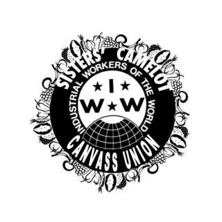

Submitted on Sun, 09/20/2015 - 3:29pm
By Dorsett IWW - Dorsett IWW, September 17, 2015
Disclaimer: The views expressed here are not the official position of the IWW and do not necessarily represent the views of anyone but the author’s.
 Dorset IWW General Members’ Branch is pleased to announce that our dispute with a Bournemouth outlet of the Co-operative has been settled amicably. We have a verbal assurance from local management who are USDAW members, that they have no wish to exploit unpaid workers on their premises, and that their connection with ‘Prospects’ has been severed. We congratulate them on their principled decision and affirm our commitment to defeat the government’s work programme and end unpaid labour.
Dorset IWW General Members’ Branch is pleased to announce that our dispute with a Bournemouth outlet of the Co-operative has been settled amicably. We have a verbal assurance from local management who are USDAW members, that they have no wish to exploit unpaid workers on their premises, and that their connection with ‘Prospects’ has been severed. We congratulate them on their principled decision and affirm our commitment to defeat the government’s work programme and end unpaid labour.
Nationally however, the situation is less clear; we have had sight of a Co-op internal document that sets out the parameters of their unpaid work experience programme. Whilst it insists that placements must be voluntary and offer meaningful experience, we note that vulnerable adults are being conscripted who may not be fully aware of their rights. It’s highly likely some of them will not be able to make an informed decision and/or will get browbeaten by jobcentre staff with targets to meet. Once they are on the scheme if they leave they may be deemed to have made themselves intentionally unemployed, and be sanctioned. Lastly of course, however you dress it up, it’s unpaid labour. How long does it take to assess a person’s suitability for working in a grocer’s shop? A week, two? Why then should a national chain not speculate a fortnight’s minimum wage to find out?
Submitted on Mon, 09/09/2013 - 2:35pm
 We are still on strike and back-pay is still being withheld.
We are still on strike and back-pay is still being withheld.
On September 1, people who want to undermine our union created a fake indymedia facebook page and used it to publicly publish a phony press release meant to look like it was written by us. This press release falsely claimed that we had called an end to our strike.
This fake press release is clearly meant to confuse people into unknowingly working against the rights of the striking workers by fundraising for or giving money to Sisters' Camelot while the fundraisers are still on strike. This statement is meant to help clarify this confusion created by such dishonesty.
We are still on strike. We are the fundraisers from Sisters' Camelot. Fundraising activity done for Sisters' Camelot is therefore scabbing.
Submitted on Sun, 05/05/2013 - 10:48am
On Thursday, May 2 the Sisters' Camelot managing collective posted a long public statement on the internet addressing the current standoff between them and our striking union of canvass workers. Their statement is full of inaccurate information. Below are the most egregious inaccuracies, each with a concise explanation of the truth.
1. Sisters' Camelot: “We operate as an egalitarian democracy where no one member has a larger voice than any other, and all participate equally in the decision-making process. Anyone in the in the community – including the canvassers – can become a member of our collective and therefore have a full voice in its operations.”
THE TRUTH: The collective has refused to allow some canvassers to join the collective when they showed interest. Other canvassers have decided the collective has been hostile towards them and the canvass in general. Many canvassers who have tried addressing canvass-related grievances through the collective process equate it to banging their head against a brick wall. Some canvassers are unable to attend Monday morning meetings because of obligations as parents, students, and workers at other jobs. The 6 collective members have hiring and firing power over us and the collective process has failed to address the grievances of canvassers, so we unionized to bring balance to the power dynamic in our workplace. Telling us to use the collective process is classic boss speak for telling workers they should go through pre-existing channels instead of unionizing.
2. SC: “After the group gave a list of demands (some, but not all, being reasonable), they gave the collective one hour to meet their demands. If not, they declared they would strike.”
THE TRUTH: In our first meeting with the managing collective after unionization, we (the union) carefully went through our demands and allowed them an hour to ask any clarifying questions about them. They chose to only ask a couple questions, using about 5 minutes worth of their allotted hour. Then we gave the collective another hour to discuss in private and expected negotiation to begin after that. We stated very clearly that we did not expect negotiations to finish that day; we just wanted them to move forward in good faith. We stated that we did not expect to get all of our demands; that many of them were flexible, and as long as negotiations went ahead in good faith we would not strike. The managing collective simply refused to negotiate with our union.
Submitted on Wed, 04/24/2013 - 6:53pm
MINNEAPOLIS-- After an investigation into the incident, the National Labor Relations Board (NLRB) has decided that IWW Sisters Camelot Canvass Union (SCCU) member ShugE Mississippi was illegally fired by Sisters' Camelot. The NLRB (National Labor Relations Board) is a government agency in charge of investigating charges of federal labor law violations, enforcing such laws, and following through with related penalties. After making this decision, the NLRB offered the Sisters' Camelot managing collective one last chance to accept a settlement agreement before setting a court-date to seek a court order.
The settlement offered by the NLRB includes the immediate rehiring of ShugE Mississippi, paying back wages, and posting a public apology at Sisters’ Camelot. The managing collective has until Tuesday, April 23 to accept this offer. If this settlement offer is not accepted, the NLRB will set a court date and seek a binding order from a judge. If this case is brought before a judge it will significantly increase the legal expenditure for Sisters’ Camelot, as it would be responsible for associated attorney’s fees. Further, Sisters’ Camelot would be obligated to pay even more back wages as more time passes-- a likely possibility as judges typically respect decisions made by the NLRB.
In the interest of giving the Sisters' Camelot managing collective space to think through this decision, the SCCU asks individuals who were planning a nonviolent sit-in demonstration at Monday's collective meeting to cancel any such plans. The public is always welcome to attend Sisters' Camelot's collective meetings, and any individual who wants to observe or engage in respectful dialogue on Monday should feel free to do so. However, the union is explicitly canceling plans of civil disobedience or disruption of and kind, and asks that people please respect that decision so the collective can have healthy discussion about this very important decision.
“This is exciting and encouraging to hear. Once this issue is fixed then we will be one step closer to ending this strike through negotiation with our entire union represented at the bargaining table,” stated Alex Forsey, one of the striking IWW Sisters' Camelot Canvass Union members.
The campaign at Sisters Camelot represents a new step for Food and Retail Workers United, an organizing committee of the Industrial Workers of the World labor union. Gaining prominence in recent years for organizing Starbucks and Jimmy Johns workers, the IWW is a global union founded over a century ago for all working people.
Submitted on Fri, 03/01/2013 - 4:26pm
CLICK HERE to donate to the Sisters' Camelot Strike Fund
 MINNEAPOLIS, MN -- Canvass workers at Sisters Camelot, a non-profit mobile food shelf and soup kitchen, have gone on strike today after the organization’s managing collective refused to negotiate with the canvass union. The workers went public as members of the Industrial Workers of the World on Monday, and met to negotiate with the collective this morning. This unionization comes after months of organizing among the workers in response to changes in the workplace, resulting in a decline in conditions and mismanagement of the worker’s time and the organization’s resources.
MINNEAPOLIS, MN -- Canvass workers at Sisters Camelot, a non-profit mobile food shelf and soup kitchen, have gone on strike today after the organization’s managing collective refused to negotiate with the canvass union. The workers went public as members of the Industrial Workers of the World on Monday, and met to negotiate with the collective this morning. This unionization comes after months of organizing among the workers in response to changes in the workplace, resulting in a decline in conditions and mismanagement of the worker’s time and the organization’s resources.
The strike began this afternoon at 12:30PM when the managing collective announced that they were unwilling to negotiate on any demands. The workers are now prepared to continue the strike by refusing to canvass door-to-door or conduct fundraising efforts until the collective comes back to the table ready to meet the workers’ demands.
“It’s deeply disappointing that the collective isn’t willing to take the demands of its workers seriously,” said Maria Wesserle, a canvass worker, “The last thing we wanted in this situation was to be pushed to the point of a strike.”
Canvassers at Sisters Camelot are employed as independent contractors. Workers began organizing with the IWW after a restructuring of the organization’s door-to-door fundraising operation left workers with increased work stress and less control over conditions. They are demanding that management positions in the canvass program be replaced with coordinators elected by the workers, and that hiring and firing be conducted by a worker committee. In addition, workers are asking for better conditions such as sick pay and medical coverage of job injuries, as well as common sense items such as more frequent training and regular repair of work vehicles.